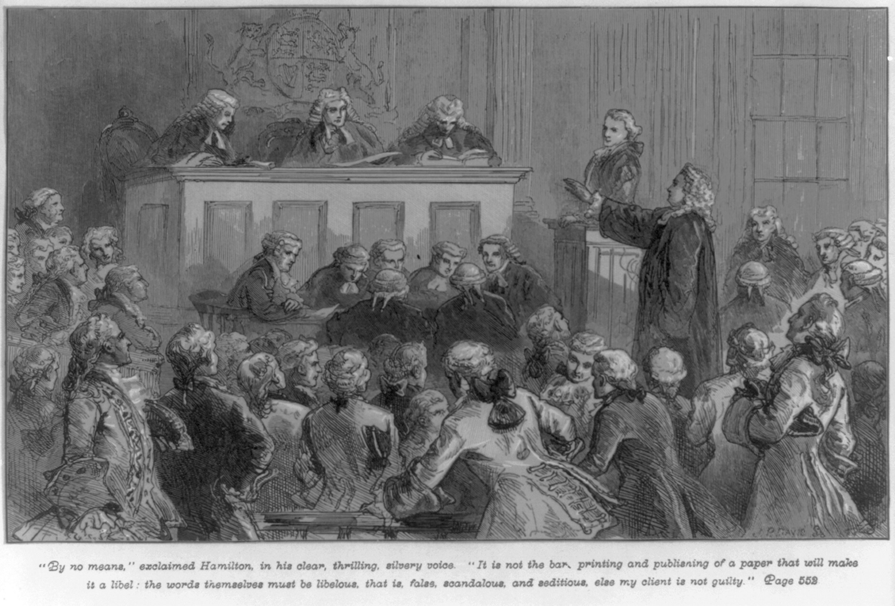
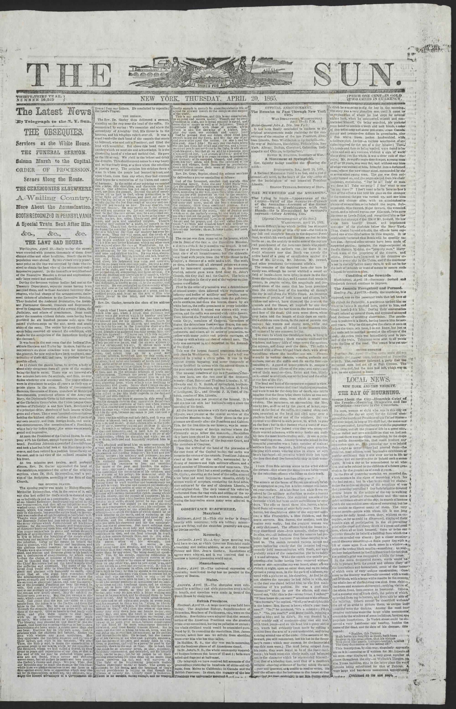
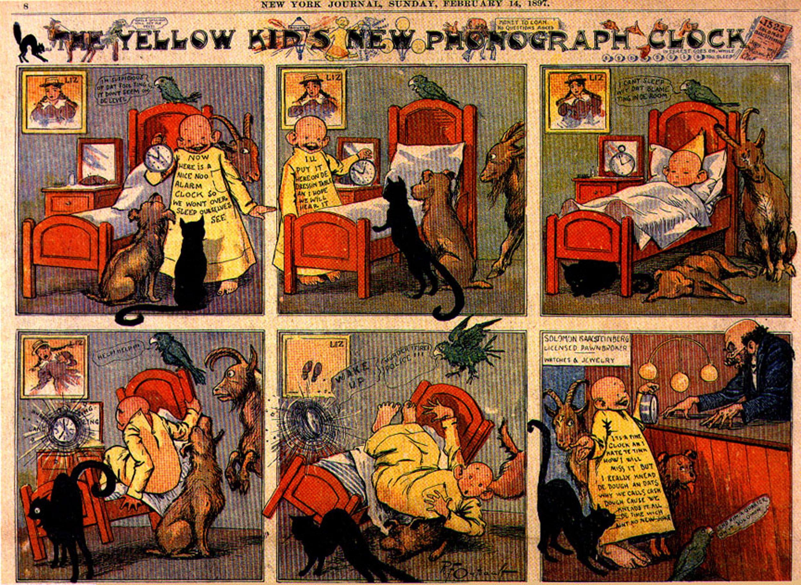

Over the course of its long and complex history, the newspaper has undergone many transformations. Examining newspapers’ historical roots can help shed some light on how and why the newspaper has evolved into the multifaceted medium that it is today. Scholars commonly credit the ancient Romans with publishing the first newspaper, Acta Diurna, or daily doings, in 59 BCE. Although no copies of this paper have survived, it is widely believed to have published chronicles of events, assemblies, births, deaths, and daily gossip.
In 1566, another ancestor of the modern newspaper appeared in Venice, Italy. These avisi, or gazettes, were handwritten and focused on politics and the military conflicts. However, the absence of printing-press technology greatly limited the circulation for both the Acta Diurna and the Venetian papers.
Figure 4.2

Johannes Gutenberg’s printing press exponentially increased the rate at which printed materials could be reproduced.
Johannes Gutenberg’s printing press drastically changed the face of publishing. In 1440, Gutenberg invented a movable-type press that permitted the high-quality reproduction of printed materials at a rate of nearly 4,000 pages per day, or 1,000 times more than could be done by a scribe by hand. This innovation drove down the price of printed materials and, for the first time, made them accessible to a mass market. Overnight, the new printing press transformed the scope and reach of the newspaper, paving the way for modern-day journalism.
The first weekly newspapers to employ Gutenberg’s press emerged in 1609. Although the papers—Relations: Aller Furnemmen, printed by Johann Carolus, and Aviso Relations over Zeitung, printed by Lucas Schulte—did not name the cities in which they were printed to avoid government persecution, their approximate location can be identified because of their use of the German language. Despite these concerns over persecution, the papers were a success, and newspapers quickly spread throughout Central Europe. Over the next 5 years, weeklies popped up in Basel, Frankfurt, Vienna, Hamburg, Berlin, and Amsterdam. In 1621, England printed its first paper under the title Corante, or weekely newes from Italy, Germany, Hungary, Poland, Bohemia, France and the Low Countreys. By 1641, a newspaper was printed in almost every country in Europe as publication spread to France, Italy, and Spain.
Figure 4.3

Newspapers are the descendants of the Dutch corantos and the German pamphlets of the 1600s.
These early newspapers followed one of two major formats. The first was the Dutch-style corantos, a densely packed two- to four-page paper, while the second was the German-style pamphlet, a more expansive 8- to 24-page paper. Many publishers began printing in the Dutch format, but as their popularity grew, they changed to the larger German style.
Because many of these early publications were regulated by the government, they did not report on local news or events. However, when civil war broke out in England in 1641, as Oliver Cromwell and Parliament threatened and eventually overthrew King Charles I, citizens turned to local papers for coverage of these major events. In November 1641, a weekly paper titled The Heads of Severall Proceedings in This Present Parliament began focusing on domestic news.Moira Goff, “Early History of the English Newspaper,” 17th-18th Century Burney Collection Newspapers, Gale, 2007, http://find.galegroup.com/bncn/topicguide/bbcn_03.htm. The paper fueled a discussion about the freedom of the press that was later articulated in 1644 by John Milton in his famous treatise AreopagiticaJohn Milton’s 1644 treatise that criticized the British Parliament’s regulation of texts, which paved the way for the freedom of the press..
Figure 4.4

John Milton’s 1644 Areopagitica, which criticized the British Parliament’s role in regulating texts and helped pave the way for the freedom of the press.
Although the Areopagitica focused primarily on Parliament’s ban on certain books, it also addressed newspapers. Milton criticized the tight regulations on their content by stating, “[w]ho kills a man kills a reasonable creature, God’s image; but he who destroys a good book, kills reason itself, kills the image of God, as it were in the eye.”John Milton, Areopagitica, 1644, http://oll.libertyfund.org/index.php?option=com_content&task=view&id=23&Itemid=275. Despite Milton’s emphasis on texts rather than on newspapers, the treatise had a major effect on printing regulations. In England, newspapers were freed from government control, and people began to understand the power of free press.
Papers took advantage of this newfound freedom and began publishing more frequently. With biweekly publications, papers had additional space to run advertisements and market reports. This changed the role of journalists from simple observers to active players in commerce, as business owners and investors grew to rely on the papers to market their products and to help them predict business developments. Once publishers noticed the growing popularity and profit potential of newspapers, they founded daily publications. In 1650, a German publisher began printing the world’s oldest surviving daily paper, Einkommende Zeitung, and an English publisher followed suit in 1702 with London’s Daily Courant. Such daily publications, which employed the relatively new format of headlines and the embellishment of illustrations, turned papers into vital fixtures in the everyday lives of citizens.
Newspapers did not come to the American colonies until September 25, 1690, when Benjamin Harris printed Public Occurrences, Both FORREIGN and DOMESTICK. Before fleeing to America for publishing an article about a purported Catholic plot against England, Harris had been a newspaper editor in England. The first article printed in his new colonial paper stated, “[t]he Christianized Indians in some parts of Plimouth, have newly appointed a day of thanksgiving to God for his Mercy.”Benjamin Harris, Public Occurrences, Both FORREIGN and DOMESTICK, September 25, 1690. The other articles in Public Occurrences, however, were in line with Harris’s previously more controversial style, and the publication folded after just one issue.
Fourteen years passed before the next American newspaper, The Boston News-Letter, launched. Fifteen years after that, The Boston Gazette began publication, followed immediately by the American Weekly Mercury in Philadelphia. Trying to avoid following in Harris’s footsteps, these early papers carefully eschewed political discussion to avoid offending colonial authorities. After a lengthy absence, politics reentered American papers in 1721, when James Franklin published a criticism of smallpox inoculations in the New England Courant. The following year, the paper accused the colonial government of failing to protect its citizens from pirates, which landed Franklin in jail.
After Franklin offended authorities once again for mocking religion, a court dictated that he was forbidden “to print or publish The New England Courant, or any other Pamphlet or Paper of the like Nature, except it be first Supervised by the Secretary of this Province.”Massachusetts Historical Society, “Silence DoGood: Benjamin Franklin in the New England Courant,” http://www.masshist.org/online/silence_dogood/essay.php?entry_id=204. Immediately following this order, Franklin turned over the paper to his younger brother, Benjamin. Benjamin Franklin, who went on to become a famous statesman and who played a major role in the American Revolution, also had a substantial impact on the printing industry as publisher of The Pennsylvania Gazette and the conceiver of subscription libraries.
Figure 4.5
The New York Weekly Journal founder John Peter Zenger brought controversial political discussion to the New York press.
Boston was not the only city in which a newspaper discussed politics. In 1733, John Peter Zenger founded The New York Weekly Journal. Zenger’s paper soon began criticizing the newly appointed colonial governor, William Cosby, who had replaced members of the New York Supreme Court when he could not control them. In late 1734, Cosby had Zenger arrested, claiming that his paper contained “divers scandalous, virulent, false and seditious reflections.”Archiving Early America, “Peter Zenger and Freedom of the Press,” http://www.earlyamerica.com/earlyamerica/bookmarks/zenger/. Eight months later, prominent Philadelphia lawyer Andrew Hamilton defended Zenger in an important trial. Hamilton compelled the jury to consider the truth and whether or not what was printed was a fact. Ignoring the wishes of the judge, who disapproved of Zenger and his actions, the jury returned a not guilty verdict to the courtroom after only a short deliberation. Zenger’s trial resulted in two significant movements in the march toward freedom of the press. First, the trial demonstrated to the papers that they could potentially print honest criticism of the government without fear of retribution. Second, the British became afraid that an American jury would never convict an American journalist.
With Zenger’s verdict providing more freedom to the press and as some began to call for emancipation from England, newspapers became a conduit for political discussion. More conflicts between the British and the colonists forced papers to pick a side to support. While a majority of American papers challenged governmental authorities, a small number of Loyalist papers, such as James Rivington’s New York Gazetteer, gave voice to the pro-British side. Throughout the war, newspapers continued to publish information representing opposing viewpoints, and the partisan press was born. After the revolution, two opposing political parties—the Federalists and the Republicans—emerged, giving rise to partisan newspapers for each side.
In 1791, the nascent United States of America adopted the First Amendment as part of the Bill of Rights. This act states that “Congress shall make no law respecting an establishment of religion, or prohibiting the free exercise thereof; or abridging the freedom of speech, or of the press; or the right of the people peaceable to assemble, and to petition the government for a redress of grievances.”Cornell University Law School, “Bill of Rights,” http://topics.law.cornell.edu/constitution/billofrights. In this one sentence, U.S. law formally guaranteed freedom of press.
However, as a reaction to harsh partisan writing, in 1798, Congress passed the Sedition Act, which declared that any “writing, printing, uttering, or publishing any false, scandalous and malicious writing or writings against the government of the United States” was punishable by fine and imprisonment.Constitution Society, “Sedition Act, (July 14, 1798),” http://www.constitution.org/rf/sedition_1798.htm. When Thomas Jefferson was elected president in 1800, he allowed the Sedition Act to lapse, claiming that he was lending himself to “a great experiment … to demonstrate the falsehood of the pretext that freedom of the press is incompatible with orderly government.”University of Virginia, “Thomas Jefferson on Politics & Government,” http://etext.virginia.edu/jefferson/quotations/jeff1600.htm. This free-press experiment has continued to modern times.
As late as the early 1800s, newspapers were still quite expensive to print. Although daily papers had become more common and gave merchants up-to-date, vital trading information, most were priced at about 6 cents a copy—well above what artisans and other working-class citizens could afford. As such, newspaper readership was limited to the elite.
All that changed in September 1833 when Benjamin Day created The Sun. Printed on small, letter-sized pages, The Sun sold for just a penny. With the Industrial Revolution in full swing, Day employed the new steam-driven, two-cylinder press to print The Sun. While the old printing press was capable of printing approximately 125 papers per hour, this technologically improved version printed approximately 18,000 copies per hour. As he reached out to new readers, Day knew that he wanted to alter the way news was presented. He printed the paper’s motto at the top of every front page of The Sun: “The object of this paper is to lay before the public, at a price within the means of every one, all the news of the day, and at the same time offer an advantageous medium for advertisements.”Paul Starr, The Creation of the Media: Political Origins of Modern Communications (New York: Basic Books, 2004), 131.
The Sun sought out stories that would appeal to the new mainstream consumer. As such, the paper primarily published human-interest stories and police reports. Additionally, Day left ample room for advertisements. Day’s adoption of this new format and industrialized method of printing was a huge success. The Sun became the first paper to be printed by what became known as the penny pressA newspaper format popular in the 1830s, printed on small paper sizes with a fast printing press and sold for one penny.. Prior to the emergence of the penny press, the most popular paper, New York City’s Courier and Enquirer, had sold 4,500 copies per day. By 1835, The Sun sold 15,000 copies per day.
Figure 4.6
Benjamin Day’s Sun, the first penny paper. The emergence of the penny press helped turn newspapers into a truly mass medium.
Another early successful penny paper was James Gordon Bennett’s New York Morning Herald, which was first published in 1835. Bennett made his mark on the publishing industry by offering nonpartisan political reporting. He also introduced more aggressive methods for gathering news, hiring both interviewers and foreign correspondents. His paper was the first to send a reporter to a crime scene to witness an investigation. In the 1860s, Bennett hired 63 war reporters to cover the U.S. Civil War. Although the Herald initially emphasized sensational news, it later became one of the country’s most respected papers for its accurate reporting.
Another major historical technological breakthrough for newspapers came when Samuel Morse invented the telegraph. Newspapers turned to emerging telegraph companies to receive up-to-date news briefs from cities across the globe. The significant expense of this service led to the formation of the Associated Press (AP) in 1846 as a cooperative arrangement of five major New York papers: the New York Sun, the Journal of Commerce, the Courier and Enquirer, the New York Herald, and the Express. The success of the Associated Press led to the development of wire services between major cities. According to the AP, this meant that editors were able to “actively collect news as it [broke], rather than gather already published news.”Associated Press, “AP History,” http://www.ap.org/pages/about/history/history_first.html. This collaboration between papers allowed for more reliable reporting, and the increased breadth of subject matter lent subscribing newspapers mass appeal for not only upper- but also middle- and working-class readers.
In the late 1800s, New York World publisher Joseph Pulitzer developed a new journalistic style that relied on an intensified use of sensationalismThe use of crime, violence, emotion, and sex in headlines to sell papers.—stories focused on crime, violence, emotion, and sex. Although he made major strides in the newspaper industry by creating an expanded section focusing on women and by pioneering the use of advertisements as news, Pulitzer relied largely on violence and sex in his headlines to sell more copies. Ironically, journalism’s most prestigious award is named for him. His New York World became famous for such headlines as “Baptized in Blood” and “Little Lotta’s Lovers.”Irving E. Fang, A History of Mass Communication: Six Information Revolutions (Boston: Focal PressUSA, 1997), 103. This sensationalist style served as the forerunner for today’s tabloidsWeekly or biweekly journals that focus on entertainment or local issues. These papers typically sensationalize stories.. Editors relied on shocking headlines to sell their papers, and although investigative journalism was predominant, editors often took liberties with how the story was told. Newspapers often printed an editor’s interpretation of the story without maintaining objectivity.
At the same time Pulitzer was establishing the New York World, William Randolph Hearst—an admirer and principal competitor of Pulitzer—took over the New York Journal. Hearst’s life partially inspired the 1941 classic film Citizen Kane. The battle between these two major New York newspapers escalated as Pulitzer and Hearst attempted to outsell one another. The papers slashed their prices back down to a penny, stole editors and reporters from each other, and filled their papers with outrageous, sensationalist headlines. One conflict that inspired particularly sensationalized headlines was the Spanish-American War. Both Hearst and Pulitzer filled their papers with huge front-page headlines and gave bloody—if sometimes inaccurate—accounts of the war. As historian Richard K. Hines writes, “The American Press, especially ‘yellow presses’ such as William Randolph Hearst’s New York Journal [and] Joseph Pulitzer’s New York World … sensationalized the brutality of the reconcentrado and the threat to American business interests. Journalists frequently embellished Spanish atrocities and invented others.”Richard K. Hines, “‘First to Respond to Their Country’s Call’: The First Montana Infantry and the Spanish-American War and Philippine Insurrection, 1898–1899,” Montana: The Magazine of Western History 52, no. 3 (Autumn 2002): 46.
As the publishers vied for readership, an entertaining new element was introduced to newspapers: the comic strip. In 1896, Hearst’s New York Journal published R. F. Outcault’s the Yellow Kid in an attempt to “attract immigrant readers who otherwise might not have bought an English-language paper.”Lisa Yaszek, “‘Them Damn Pictures’: Americanization and the Comic Strip in the Progressive Era,” Journal of American Studies 28, no. 1 (1994): 24. Readers rushed to buy papers featuring the successful yellow-nightshirt-wearing character. The cartoon “provoked a wave of ‘gentle hysteria,’ and was soon appearing on buttons, cracker tins, cigarette packs, and ladies’ fans—and even as a character in a Broadway play.”Lisa Yaszek, “‘Them Damn Pictures’: Americanization and the Comic Strip in the Progressive Era,” Journal of American Studies 28, no. 1 (1994): 30. Another effect of the cartoon’s popularity was the creation of the term yellow journalismMade famous by Pulitzer and Hearst, this style of journalism uses sensationalism, misleading stories, and distorted images to boost sales. to describe the types of papers in which it appeared.
Figure 4.7
R. F. Outcault’s the Yellow Kid, first published in William Randolf Hearst’s New York Journal in 1896.
Pulitzer responded to the success of the Yellow Kid by introducing stunt journalism. The publisher hired journalist Elizabeth Cochrane, who wrote under the name Nellie Bly, to report on aspects of life that had previously been ignored by the publishing industry. Her first article focused on the New York City Lunatic Asylum on Blackwell Island. Bly feigned insanity and had herself committed to the infamous asylum. She recounted her experience in her first article, “Ten Days in a Madhouse.” “It was a brilliant move. Her madhouse performance inaugurated the performative tactic that would become her trademark reporting style.”Jean Marie Lutes, “Into the Madhouse with Nellie Bly: Girl Stunt Reporting in Late Nineteenth-Century America,” American Quarterly 54, no. 2 (2002): 217. Such articles brought Bly much notoriety and fame, and she became known as the first stunt journalist. Although stunts such as these were considered lowbrow entertainment and female stunt reporters were often criticized by more traditional journalists, Pulitzer’s decision to hire Bly was a huge step for women in the newspaper business. Bly and her fellow stunt reporters “were the first newspaperwomen to move, as a group, from the women’s pages to the front page, from society news into political and criminal news.”Jean Marie Lutes, “Into the Madhouse with Nellie Bly: Girl Stunt Reporting in Late Nineteenth-Century America,” American Quarterly 54, no. 2 (2002): 220.
Despite the sometimes questionable tactics of both Hearst and Pulitzer, each man made significant contributions to the growing journalism industry. By 1922, Hearst, a ruthless publisher, had created the country’s largest media-holding company. At that time, he owned 20 daily papers, 11 Sunday papers, 2 wire services, 6 magazines, and a newsreel company. Likewise, toward the end of his life, Pulitzer turned his focus to establishing a school of journalism. In 1912, a year after his death and 10 years after Pulitzer had begun his educational campaign, classes opened at the Columbia University School of Journalism. At the time of its opening, the school had approximately 100 students from 21 countries. Additionally, in 1917, the first Pulitzer Prize was awarded for excellence in journalism.
Please respond to the following writing prompts. Each response should be a minimum of one paragraph.